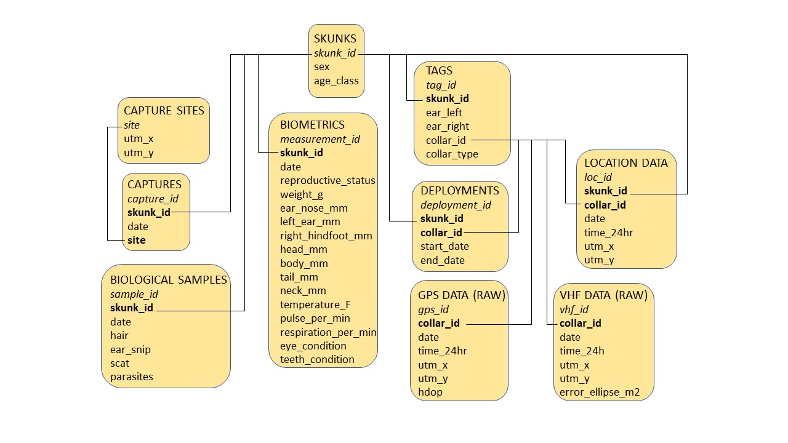

Chapter 1 Relational Database
This chapter documents the creation of a relational database in partial fulfillment of the RDS 2023 course requirements.
1.1 Designing a Database
Below is an image of the database structure I will to use to host the data for my final semester project. The diagram describes the tables that will compose my database. Primary keys are in bold and foreign keys are in italics.

1.2 Creating the Database
My first step is to create a database and establish a connection between R and SQLite
library(DBI) #load package
skunks_db <- dbConnect(RSQLite::SQLite(), "C:/Users/Kara.White/Documents/PhD/resourceSelection/data/skunks.db") #establish db connection1.3 Creating tables
Now that I have created and established a connection to the database I can begin to create tables
#create skunk table
dbExecute(skunks_db, "CREATE TABLE skunks (
skunk_id varchar(10) NOT NULL,
sex char(1) CHECK (sex IN ('M', 'F')),
age_class varchar(8) CHECK (age_class IN ('juvenile', 'subadult', 'adult')),
PRIMARY KEY (skunk_id)
);") #create capture sites table
dbExecute(skunks_db, "CREATE TABLE capture_sites (
site varchar(7) NOT NULL PRIMARY KEY,
utm_x double,
utm_y double
);")#create captures table
dbExecute(skunks_db, "CREATE TABLE captures (
capture_id INTEGER PRIMARY KEY AUTOINCREMENT,
skunk_id varchar(10),
date text,
site varchar(7),
FOREIGN KEY(skunk_id) REFERENCES skunks(skunks_id)
FOREIGN KEY(site) REFERENCES capture_sites(site)
);")#create biometrics table
dbExecute(skunks_db, "CREATE TABLE biometrics (
measurement_id INTEGER PRIMARY KEY AUTOINCREMENT,
skunk_id varchar(8),
date text,
reproductive_status char(20),
weight_g float,
ear_nose_mm float,
left_ear_mm float,
right_hindfoot_mm float,
head_mm float,
body_mm float,
tail_mm float,
neck_mm float,
temperature_F float,
pulse_per_min float,
respiration_per_min float,
eye_condition char(10),
teeth_condition varchar(10),
FOREIGN KEY (skunk_id) REFERENCES skunks(skunk_id)
);")#create biological samples table
dbExecute(skunks_db, "CREATE TABLE biological_samples (
sample_id INTEGER PRIMARY KEY AUTOINCREMENT,
skunk_id varchar(8),
date text,
hair char(1) CHECK (hair IN ('Y', 'N')),
ear_snip char(1) CHECK (ear_snip IN ('Y', 'N')),
scat char(1) CHECK (scat IN ('Y', 'N')),
parasites char(1) CHECK (parasites IN ('Y', 'N')),
FOREIGN KEY (skunk_id) REFERENCES skunks(skunk_id)
);")#create tags table
dbExecute(skunks_db, "CREATE TABLE tags (
tag_id INTEGER PRIMARY KEY AUTOINCREMENT,
skunk_id varchar(8),
ear_left char(3),
ear_right char(3),
collar_id varchar(10),
collar_type char(3),
FOREIGN KEY (skunk_id) REFERENCES skunks(skunk_id)
);")#create deployments table
dbExecute(skunks_db, "CREATE TABLE deployments (
deployment_id INTEGER PRIMARY KEY AUTOINCREMENT,
skunk_id varchar(8),
collar_id varchar(10),
start_date text,
end_date text,
FOREIGN KEY (skunk_id) REFERENCES skunks(skunk_id)
FOREIGN KEY (collar_id) REFERENCES tags(collar_id)
);")#create gps_data_raw table
dbExecute(skunks_db, "CREATE TABLE gps_data_raw (
gps_id INTEGER PRIMARY KEY AUTOINCREMENT,
collar_id varchar(10),
date text,
time_24hr text,
utm_x double,
utm_y double,
hdop double,
FOREIGN KEY(collar_id) REFERENCES tags(collar_id)
);")#create vhf_data_raw table
dbExecute(skunks_db, "CREATE TABLE vhf_data_raw (
vhf_id INTEGER PRIMARY KEY AUTOINCREMENT,
collar_id varchar(10),
date text,
time_24hr text,
utm_x double,
utm_y double,
error_ellipse_m2 double,
FOREIGN KEY(collar_id) REFERENCES tags(collar_id)
);")#create location data table
dbExecute(skunks_db, "CREATE TABLE location_data (
loc_id INTEGER PRIMARY KEY AUTOINCREMENT,
skunk_id varchar(8),
collar_id varchar(10),
date text,
time_24hr text,
utm_x double,
utm_y double,
FOREIGN KEY (skunk_id) REFERENCES skunks(skunk_id)
FOREIGN KEY(collar_id) REFERENCES tags(collar_id)
);")1.4 Reading in CSVs
Now that I have finished creating all of the tables as shown in 1.1 I can load the data that I will use to populate the tables
skunks <- read.csv("~/PhD/resourceSelection/data/skunks.csv", stringsAsFactors = F)
capture_sites <- read.csv("~/PhD/resourceSelection/data/capture_sites.csv", stringsAsFactors = F)
captures <- read.csv("~/PhD/resourceSelection/data/captures.csv", stringsAsFactors = F)
biometrics <- read.csv("~/PhD/resourceSelection/data/Biometrics.csv", stringsAsFactors = F)
biological_samples <- read.csv("~/PhD/resourceSelection/data/samples.csv", stringsAsFactors = F)
tags <- read.csv("~/PhD/resourceSelection/data/tags.csv", stringsAsFactors = F)
deployments <- read.csv("~/PhD/resourceSelection/data/deployments.csv", stringsAsFactors = F)Before I populate the tables I will check to make sure column names match the ones in the tables I created and rearrange columns so that they appear in the right order
names(skunks) ## [1] "skunk_id" "sex" "age_class"names(capture_sites)## [1] "site" "utm_x" "utm_y"The first two CSVs have columns with correct names and in the correct order, but I will need to add auto-incremental columns and then re-order the columns for the remaining CSVs.
library(dplyr)
captures$capture_id <- 1:nrow(captures) #add column
head(captures, 2) #check column added## skunk_id date site capture_id
## 1 01-20-F 4/18/2020 F006-20 1
## 2 02-20-M 4/19/2020 F003-20 2captures <- captures[, c("capture_id", "skunk_id", "date", "site")] #reorder columns
biometrics$measurement_id <- 1:nrow(biometrics) #add column
head(biometrics, 2) #check column added## skunk_id date reproductive_status weight_g ear_nose_mm left_ear_mm
## 1 02-20-M 4/20/2022 Distended testes 800 27 20
## 2 01-20-F 4/19/2022 Not active 630 24 27
## right_hindfoot_mm head_mm body_mm tail_mm neck_mm temperature_F pulse_per_min
## 1 44 62 285 218 NA 95.9 68
## 2 40 72 252 192 1200 97.4 120
## respiration_per_min eye_condition teeth_condition measurement_id
## 1 12 Normal Worn 1
## 2 NA Normal Good 2biometrics <- biometrics %>% select(measurement_id, everything()) #reorder columns
head(biometrics, 2) #check columns are re-ordered## measurement_id skunk_id date reproductive_status weight_g ear_nose_mm
## 1 1 02-20-M 4/20/2022 Distended testes 800 27
## 2 2 01-20-F 4/19/2022 Not active 630 24
## left_ear_mm right_hindfoot_mm head_mm body_mm tail_mm neck_mm temperature_F
## 1 20 44 62 285 218 NA 95.9
## 2 27 40 72 252 192 1200 97.4
## pulse_per_min respiration_per_min eye_condition teeth_condition
## 1 68 12 Normal Worn
## 2 120 NA Normal Goodbiological_samples$sample_id <- 1:nrow(biological_samples) #add column
head(biological_samples, 2) #check column added## skunk_id date hair ear_snip scat parasites sample_id
## 1 01-20-F 4/19/2020 Y Y N N 1
## 2 02-20-M 4/20/2020 Y Y N N 2biological_samples <- biological_samples %>% select(sample_id, everything()) #reorder columns
head(biological_samples, 2) #check columns are re-ordered## sample_id skunk_id date hair ear_snip scat parasites
## 1 1 01-20-F 4/19/2020 Y Y N N
## 2 2 02-20-M 4/20/2020 Y Y N Ntags$tag_id <- 1:nrow(tags)
head(tags, 2) #check column added## skunk_id ear_right ear_left collar_id collar_type tag_id
## 1 01-22-M 30 41 165.252 VHF 1
## 2 02-22-F 96 68 165.371 VHF 2tags <- tags %>% select (tag_id, everything()) #reorder columns
head(tags, 2) #check columns are re-ordered## tag_id skunk_id ear_right ear_left collar_id collar_type
## 1 1 01-22-M 30 41 165.252 VHF
## 2 2 02-22-F 96 68 165.371 VHFdeployments$deployment_id <- 1:nrow(deployments)
head(deployments, 2) #check column added## skunk_id collar_id start_date end_date deployment_id
## 1 01-22-M 165.252 3/29/2022 8/12/2022 1
## 2 02-22-F 165.371 3/30/2022 8/12/2022 2deployments <- deployments %>% select (deployment_id, everything()) #reorder columns
head(deployments, 2) #check columns are re-ordered## deployment_id skunk_id collar_id start_date end_date
## 1 1 01-22-M 165.252 3/29/2022 8/12/2022
## 2 2 02-22-F 165.371 3/30/2022 8/12/20221.5 Populating database tables
Now that I have checked that all column names match the column names I assigned when creating the tables I can insert the data into the tables
#add data from csv into captures table
dbWriteTable(skunks_db, "skunks", skunks, append = T)
#add data from csv into capture_sites table
dbWriteTable(skunks_db, "capture_sites", capture_sites, append = T)
#add data from csv into captures table
dbWriteTable(skunks_db, "captures", captures, append = T)
#add data from csv into biometrics table
dbWriteTable(skunks_db, "biometrics", biometrics, append = T)
#add data from csv into biological samples table
dbWriteTable(skunks_db, "biological_samples", biological_samples, append = T)
#add data from csv into biological samples table
dbWriteTable(skunks_db, "tags", tags, append = T)
#add data from csv into biological samples table
dbWriteTable(skunks_db, "deployments", deployments, append = T)1.6 Querying the database
Now that I have inserted data into the table, I can make basic queries to check that the data has been inserted into the tables correctly
dbGetQuery(skunks_db, "SELECT * FROM skunks LIMIT 10;") #skunks table## skunk_id sex age_class
## 1 01-20-F F adult
## 2 02-20-M M adult
## 3 01-21-M M adult
## 4 02-21-M M adult
## 5 03-21-F F adult
## 6 04-21-M M adult
## 7 05-21-M M adult
## 8 06-21-F F adult
## 9 07-21-M M adult
## 10 08-21-M M adultdbGetQuery(skunks_db, "SELECT * FROM capture_sites LIMIT 10;") #capture sites table## site utm_x utm_y
## 1 F003-20 481063 4987647
## 2 F006-20 480943 4989279
## 3 F012-20 478896 4988372
## 4 F016-21 478920 4988815
## 5 F033-21 477448 4994177
## 6 F034-21 478153 4994150
## 7 F043-21 478135 4994097
## 8 F048-21 480580 4998646
## 9 F053-21 478288 4998991
## 10 F066-21 480551 4995177dbGetQuery(skunks_db, "SELECT * FROM captures LIMIT 10;") #captures table## capture_id skunk_id date site
## 1 1 01-20-F 4/18/2020 F006-20
## 2 2 02-20-M 4/19/2020 F003-20
## 3 3 <NA> 4/19/2020 F012-20
## 4 4 01-21-M 3/20/2021 F033-21
## 5 5 02-21-M 3/23/2021 F034-21
## 6 6 01-21-M 3/25/2021 F034-21
## 7 7 03-21-F 3/25/2021 F043-21
## 8 8 04-21-M 3/27/2021 F033-21
## 9 9 04-21-M 4/2/2021 F034-21
## 10 10 05-21-M 4/3/2021 F034-21dbGetQuery(skunks_db, "SELECT * FROM biometrics LIMIT 10;") #biometrics table## measurement_id skunk_id date reproductive_status weight_g ear_nose_mm
## 1 1 02-20-M 4/20/2022 Distended testes 800 27.0
## 2 2 01-20-F 4/19/2022 Not active 630 24.0
## 3 3 01-21-M 3/20/2021 Distended testes 950 24.0
## 4 4 01-21-M 3/25/2021 Distended testes 950 NA
## 5 5 02-21-M 3/23/2021 Distended testes 800 20.5
## 6 6 03-21-F 3/25/2021 Distended testes 650 25.0
## 7 7 03-21-F 5/6/2021 Not active 525 24.0
## 8 8 04-21-M 3/27/2021 Not active 975 22.0
## 9 9 05-21-M 4/3/2021 Distended testes 800 26.0
## 10 10 06-21-F 4/3/2021 Distended testes 650 20.0
## left_ear_mm right_hindfoot_mm head_mm body_mm tail_mm neck_mm temperature_F
## 1 20 44 62 285 218 NA 95.9
## 2 27 40 72 252 192 1200 97.4
## 3 21 50 85 295 210 NA NA
## 4 NA NA NA NA NA NA 97.6
## 5 30 48 83 260 230 120 98.6
## 6 23 42 74 220 140 100 96.3
## 7 NA 42 104 220 185 90 92.3
## 8 28 49 75 290 210 NA 95.4
## 9 26 45 85 280 200 120 94.8
## 10 NA 41 72 NA 185 110 96.0
## pulse_per_min respiration_per_min eye_condition teeth_condition
## 1 68 12 Normal Worn
## 2 120 NA Normal Good
## 3 68 80 Normal Good
## 4 NA NA Normal Good
## 5 52 48 Normal Good
## 6 72 84 Normal Good
## 7 NA 44 Normal Good
## 8 NA 76 Normal Broken M1
## 9 52 40 Normal Good
## 10 40 36 Normal GooddbGetQuery(skunks_db, "SELECT * FROM biological_samples LIMIT 10;") #samples table## sample_id skunk_id date hair ear_snip scat parasites
## 1 1 01-20-F 4/19/2020 Y Y N N
## 2 2 02-20-M 4/20/2020 Y Y N N
## 3 3 01-21-M 3/20/2021 Y Y N N
## 4 4 01-21-M 3/25/2021 N Y Y N
## 5 5 02-21-M 3/23/2021 Y Y N Y
## 6 6 03-21-F 3/25/2021 Y Y N Y
## 7 7 03-21-F 5/6/2021 N N N N
## 8 8 04-21-M 3/27/2021 Y Y N N
## 9 9 05-21-M 4/3/2021 Y Y Y Y
## 10 10 06-21-F 4/3/2021 Y Y N NdbGetQuery(skunks_db, "SELECT * FROM tags LIMIT 10;") #tags table## tag_id skunk_id ear_left ear_right collar_id collar_type
## 1 1 01-22-M 41 30 165.252 VHF
## 2 2 02-22-F 68 96 165.371 VHF
## 3 3 03-22-M 39 95 165.4 VHF
## 4 4 04-22-M 34 94 165.303 VHF
## 5 5 05-22-M 37 78 165.27 VHF
## 6 6 06-22-F 93 54 165.21 GPS
## 7 7 07-22-F 68 31 165.421 VHF
## 8 8 01-21-M 76 100 165.064 VHF
## 9 9 02-21-M 23 1 165.2 GPS
## 10 10 03-21-F 22 2 165.022 VHFdbGetQuery(skunks_db, "SELECT * FROM deployments LIMIT 10;") #deployments table## deployment_id skunk_id collar_id start_date end_date
## 1 1 01-22-M 165.252 3/29/2022 8/12/2022
## 2 2 02-22-F 165.371 3/30/2022 8/12/2022
## 3 3 03-22-M 165.4 4/3/2022 8/12/2022
## 4 4 04-22-M 165.303 4/10/2022 8/12/2022
## 5 5 05-22-M 165.27 4/24/2022 8/12/2022
## 6 6 06-22-F 165.21 5/3/2022 8/12/2022
## 7 7 07-22-F 165.421 5/25/2022 8/12/2022
## 8 8 01-21-M 165.064 3/20/2021 7/14/2021
## 9 9 02-21-M 165.2 3/25/2021 4/1/20221
## 10 10 03-21-F 165.022 3/25/2021 5/6/2021